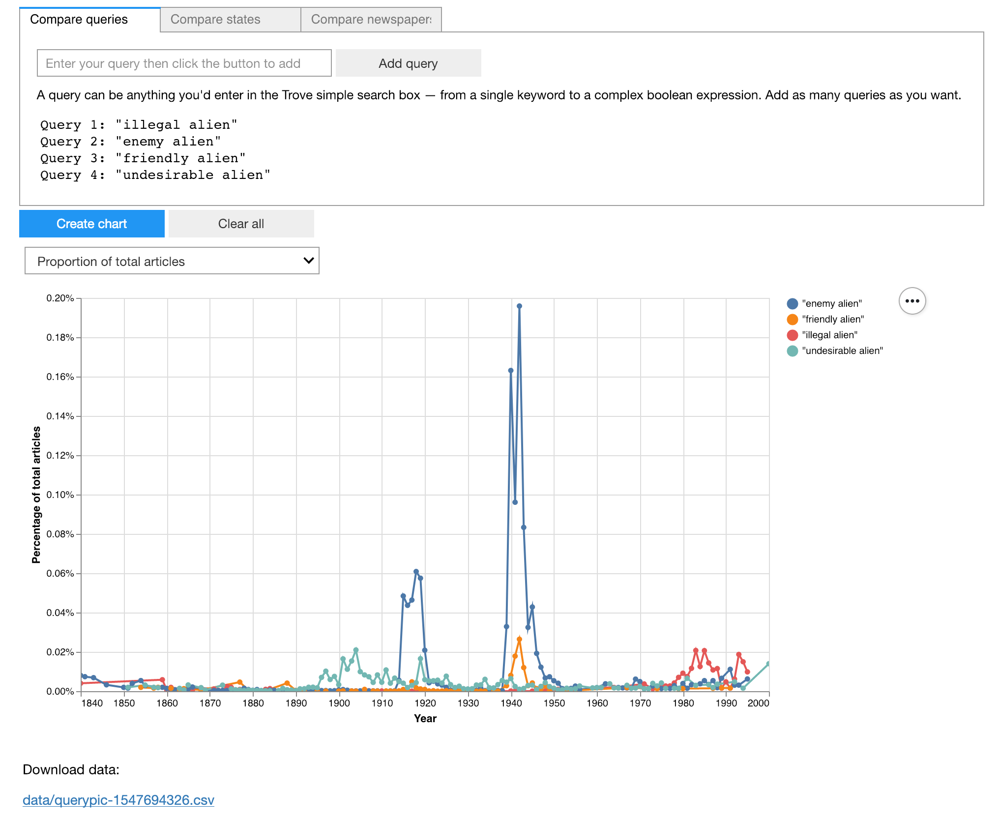
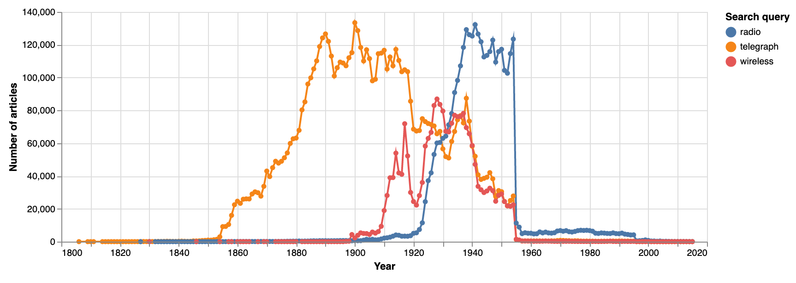
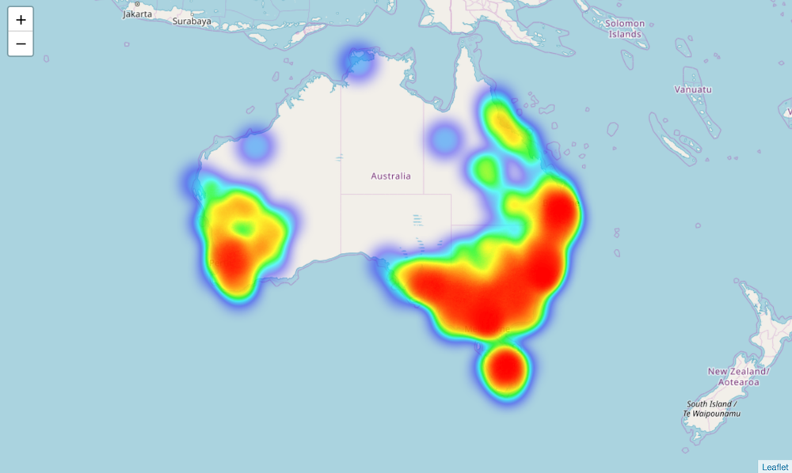
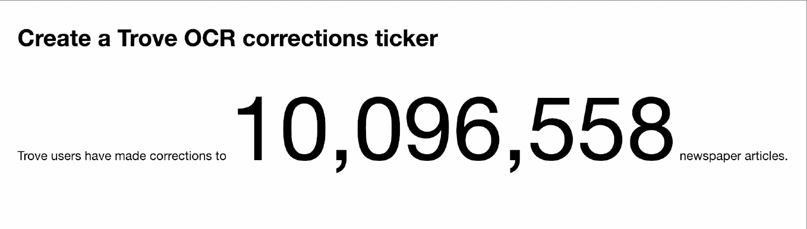
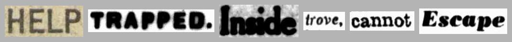
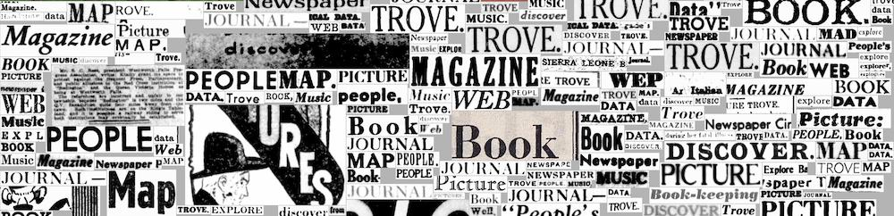

Trove newspapers
Assorted experiments and examples working with Trove’s digitised newspapers.
See below for information on running these notebooks in a live computing environment. Or just take them for a spin using Binder.

Trove newspapers in context¶
Notebooks in this section look at the Trove newspaper corpus as a whole, to try and understand what's there, and what's not.
Visualise the total number of newspaper articles in Trove by year and state¶
Trove currently includes more 200 million digitised newspaper articles published between 1803 and 2015. In this notebook we explore how those newspaper articles are distributed over time, and by state.

Analyse rates of OCR correction¶
The full text of newspaper articles in Trove is extracted from page images using Optical Character Recognition (OCR). The accuracy of the OCR process is influenced by a range of factors including the font and the quality of the images. Many errors slip through. Volunteers have done a remarkable job in correcting these errors, but it's a huge task. This notebook explores the scale of OCR correction in Trove.
Finding non-English newspapers in Trove¶
There are a growing number of non-English newspapers digitised in Trove. However, if you're only searching using English keywords, you might never know that they're there. I thought it would be useful to generate a list of non-English newspapers, but it wasn't quite as straightforward as I thought.
Beyond the copyright cliff of death¶
Most of the newspaper articles on Trove were published before 1955, but there are some from the later period. Let's find out how many, and which newspapers they were published in.
Gathering historical data about the addition of newspaper titles to Trove¶
The number of digitised newspapers available through Trove has increased dramatically since 2009. Understanding when newspapers were added is important for historiographical purposes, but there's no data about this available directly from Trove. This notebook uses web archives to extract lists of newspapers in Trove over time, and chart Trove's development.
Visualising searches¶
Notebooks in this section demonstrate some ways of visualising searches in Trove newspapers – seeing everything rather than just a list of search results.
QueryPic¶
This is the latest iteration of QueryPic with many new features. Use it to visualise searches in Trove's newspapers and gazettes, aggregating the number of results by day, month, or year. Simply copy and paste a url from a Trove web search to get started. QueryPic's charts help you explore patterns and trends, and if you find something interesting you can click on a point to view the results in Trove for that time period.
QueryPic Deconstructed¶
QueryPic is a tool I created many years ago to visualise searches in Trove's digitised newspapers. It shows you the number of articles each year that match your query — instead of a page of search results, you see the complete result set. This is an older version of QueryPic that lets you build queries using keywords, states, or newspapers.

Visualise Trove newspaper searches over time¶
This notebook helps you zoom out and explore how the number of Trove newspaper articles in your search results varies over time by using the decade and year facets. We then combine this approach with other search facets to see how we can slice a set of results up in different ways to investigate historical changes.

Map Trove newspaper results by state¶
Uses the Trove state facet to create a choropleth map that visualises the number of search results per state.
Map Trove newspaper results by place of publication¶
Uses the Trove title facet to find the number of results per newspaper, then merges the results with a dataset of geolocated newspapers to map where articles were published.

Map Trove newspaper results by place of publication over time¶
Adds a time dimension to the examples in the previous notebook to create an animated heatmap.
Useful tools¶
Notebooks in this section provide useful tools that extend or enhance the Trove web interface and API.
Save a Trove newspaper article as an image¶
Sometimes you want to be able to save a Trove newspaper article as an image. Unfortunately, the Trove web interface doesn't make this easy. The 'Download JPG' option actually loads an HTML page, and while you could individually save the images embedded in the HTML page, often articles are sliced up in ways that make the whole thing hard to read and use. This notebook grabs the page on which an article was published, and then crops the page image to the boundaries of the article. The result is a complete, intact image which presents the article as it was originally published. And if the article is split across multiple pages, you'll get one image per page.
- Download from GitHub
- View using NBViewer
- Run live on Binder
- Run as an app using Voila (the easiest, no code option!)

Download a page image¶
The Trove web interface doesn’t provide a way of getting high-resolution page images from newspapers. This simple app lets you download page images as complete, high-resolution JPG files.

Generate an article thumbnail¶
Generate a nice square thumbnail image for a newspaper article.
Upload Trove newspaper articles to Omeka-S¶
This notebook steps through the process of uploading Trove newspaper articles to your own Omeka-S instance via the API. As well as uploading the article metadata, it attaches image(s) and PDFs of the articles, and creates a linked record for the publishing newspaper. The source of the articles can be a Trove search, a Trove list, a Zotero collection, or just a list of article ids.
Harvest Australian Women's Weekly covers (or the front pages of any newspaper)¶
Somewhat confusingly, the Australian Women's Weekly is in with Trove's digitised newspapers and not the rest of the magazines. There are notebooks in the GLAM Workbench's journals section to help harvest all of a journal's covers as images, so I thought I should do the same for the Weekly. This notebook can be easily adjusted to download the front pages of any digitised newspaper.
Tips and tricks¶
Notebooks in this section provide some useful hints to use with the Trove API.
Today’s news yesterday¶
Uses the date index and the firstpageseq parameter to find articles from exactly 100 years ago that were published on the front page. It then selects one of the articles at random and downloads and displays an image of the front page.
Create a Trove OCR corrections ticker¶
Uses the has:corrections parameter to get the total number of newspaper articles with OCR corrections, then displays the results, updating every five seconds.

Get a list of Trove newspapers that doesn't include government gazettes¶
The Trove API includes an option to retrieve details of digitised newspaper titles. Version 2 of the API added a separate option to get details of government gazettes. However the original newspaper/titles requests actually returns both the newspaper and gazette titles, so there's no way of getting just the newspaper titles. This notebook explains the problem and provides a simple workaround.
Get the page coordinates of a digitised newspaper article from Trove¶
This notebook demonstrates how to find the coordinates of a newspaper article on a digitised page.
Get creative¶
Notebooks in this section look at ways you can use data from Trove newspapers in creative ways.
Make composite images from lots of Trove newspaper thumbnails¶
This notebook starts with a search in Trove's newspapers. It uses the Trove API to work its way through the search results. For each article it creates a thumbnail image using the code from this notebook. Once this first stage is finished, you have a directory full of lots of thumbnails. The next stage takes all those thumbnails and pastes them one by one into a BIG image to create a composite, or mosaic.
Create 'scissors and paste' messages from Trove newspaper articles¶

When you search for a term in Trove's digitised newspapers and click on individual article, you'll see your search terms are highlighted. If you look at the code you'll see the highlighted box around the word includes its page coordinates. That means that if we search for a word, we can find where it appears on a page, and by cropping the page to those coordinates we can create an image of an individual word. By combining these images we can create scissors and paste style messages!
Create large composite images from snipped words¶

This is a variation of the 'scissors & paste' notebook that extracts words from Trove newspaper images and compiles them into messages. In this notebook, you can harvest multiple versions of a list of words and compile them all into one big image.
Data and images¶
CSV formatted lists of newspaper titles in Trove¶
Data showing when newspaper titles were (approximately) added to Trove, extracted from web archive captures. See this notebook for more information.
- trove_newspaper_titles_2009_2021.csv – complete dataset of captures and titles
- trove_newspaper_titles_first_appearance_2009_2021.csv – filtered dataset, showing only the first appearance of each title / place / date range combination
There is also an alphabetical list of newspaper titles, showing approximately when they first appeared in Trove.
CSV formatted list of Australian Women's Weekly issues, 1933 to 1982¶
Harvested: 26 July 2020
This file includes metadata for 2,566 issues of the Australian Women's Weekly from 1933 to 1982. Fields:
issue_id: issue identifierdate: issue date (YYYY-MM-DD)url: issue urlpage_id: identifier of the first page in this issueimage_file: file name of downloaded image of front page.
Australian Women's Weekly front covers, 1933 to 1982¶
Harvested: 26 July 2020
Using the notebook above, images of the front covers of Australian Women's Weekly issues on Trove were downloaded. Harvest details:
- 2,566 images were downloaded.
- The full set of images is available from Cloudstor.
- For easy browsing, I've compiled the images into a set of PDF files, one for each decade, available from Dropbox:
- 1933 to 1939
- 1940 to 1949
- 1950 to 1959
- 1960 to 1969
- 1970 to 1979
- 1980 to 1982
Trove newspapers with non-English language content¶
Updated: 27 April 2021
Markdown formatted list of newspapers with non-English content, created using the notebook above.
Trove newspapers with articles published after 1954¶
Updated: 27 April 2021
CSV file containing a list of digitised newspapers in Trove with articles published after 1954 (the copyright cliff of death).
Run these notebooks¶
There are a number of different ways to use these notebooks. Binder is quickest and easiest, but it doesn't save your data. I've listed a number of options below from easiest to most complicated (requiring more technical knowledge). See the running Jupyter notebooks page for more details and additional options.
Using Binder¶

Click on the button above to launch the notebooks in this repository using the Binder service (it might take a little while to load). This is a free service, but note that sessions will close if you stop using the notebooks, and no data will be saved. Make sure you download any changed notebooks or harvested data that you want to save.
See Using Binder for more information.
Using Reclaim Cloud¶

Reclaim Cloud is a paid hosting service, aimed particularly at supported digital scholarship in the humanities. Unlike Binder, the environments you create on Reclaim Cloud will save your data – even if you switch them off! To run this repository on Reclaim Cloud for the first time:
- Create a Reclaim Cloud account and log in.
- Click on the button above to start the installation process.
- A dialogue box will ask you to set a password, this is used to limit access to your Jupyter installation.
- Sit back and wait for the installation to complete!
- Once the installation is finished click on the 'Open in Browser' button of your newly created environment (note that you might need to wait a few minutes before everything is ready).
See Using Reclaim Cloud for more information.
Using Docker¶
You can use Docker to run a pre-built computing environment on your own computer. It will set up everything you need to run the notebooks in this repository. This is free, but requires more technical knowledge – you'll have to install Docker on your computer, and be able to use the command line.
- Install Docker Desktop.
- Create a new directory for this repository and open it from the command line.
- From the command line, run the following command:
docker run -p 8888:8888 --name trove-newspapers -v "$PWD":/home/jovyan/work glamworkbench/trove-newspapers repo2docker-entrypoint jupyter lab --ip 0.0.0.0 --NotebookApp.token='' --LabApp.default_url='/lab/tree/index.md' - It will take a while to download and configure the Docker image. Once it's ready you'll see a message saying that Jupyter Notebook is running.
- Point your web browser to
http://127.0.0.1:8888
See Using Docker for more information.
Cite as¶
Sherratt, Tim, (29 October 2019), GLAM-Workbench/trove-newspapers (version v0.1.0), Zenodo, https://doi.org/10.5281/zenodo.3521725